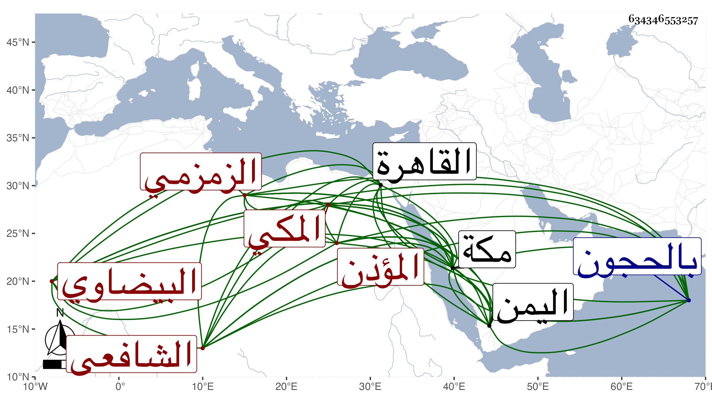

0902Sakhawi.DawLamic.ITO20230111-ara1.EIS1600.634346553257
Biography ID: 634346553257
936
إسماعيل بن علي بن محمد بن داود بن شمس بن عبد الله بن رستم المجد أبو الطاهر البيضاوي ثم المكي الزمزمي الشافعي المؤذن أخو إبراهيم وحسين ووالد نائب أبي إسماعيل المذكورين . ولد سنة ست وستين وسبعمائة بمكة وسمع بها من أبي الطيب السحولي وابن صديق وغيرهما ، ودخل القاهرة سنة اثنتين وثمانمائة فسمع بها من الحلاوي بعض مسند أحمد وغيره وأجاز له ابن النجم وابن الهبل وابن أميلة والصلاح بن أبي عمر وغيرهم واشتغل كثيرا وأخذ العروض عن النجم المرجاني ، قال شيخنا في أنبائه وكان يتعانى النظم وله نظم مقبول ومدائح نبوية من غير اشتغال بآلاته ثم أخذ العروض عن النجم المرجاني ومهر ، وكان فاضلا قليل الشر مشتغلا بنفسه وعياله مشكور السيرة ملازما لخدمة قبة العباس وله سماع من قدماء المكيين وحدث بشيء يسير سمعت من نظمه وقال في معجمه اشتغل كثيرا وتعانى النظم وكان أبوه على سقاية العباس فاستمر هو وأخوته بها ، وأول ما لقيته في سنة خمس وثمانين وسبعمائة وسمعت من شعره وكان إذ ذاك أول ما تعاناه ثم مهر وعمل قصائد نبويات ومدائح في ملوك اليمن وغيرهم بل مدحني بعد ذلك بقصيدة :
| إن لم تجودوا بالوصال وطال في | هجرانكم ليلي البهيم من السهر |
| فدجاه يجلوه شهاب ثاقب | من جده كيد العدى عني حجر |
قال وأنشدني لنفسه قصيدة نونية وغير ذلك . مات في عصر يوم الأحد ثالث عشري شوال سنة ثمان وثلاثين بمكة ودفن من الغد بالحجون ، وقد لقيه شيخنا العلاء القلقشندي في سنة إحدى عشرة بمكة فأخذ عنه علم العروض وكتب من نظمه مما سمعه منه في ضبط بحور الشعر :
| طويل يمد البسط بالوفر كامل | ويهزج في رجز ويرمل مسرعا |
| فسرح خفيفا يقتضب لنا | من اجتث من قرب لندرك مطمعا |
وممن ذكره المقريزي في عقوده وقال أنه سمع منه من شعره ونعم الرجل كان .
